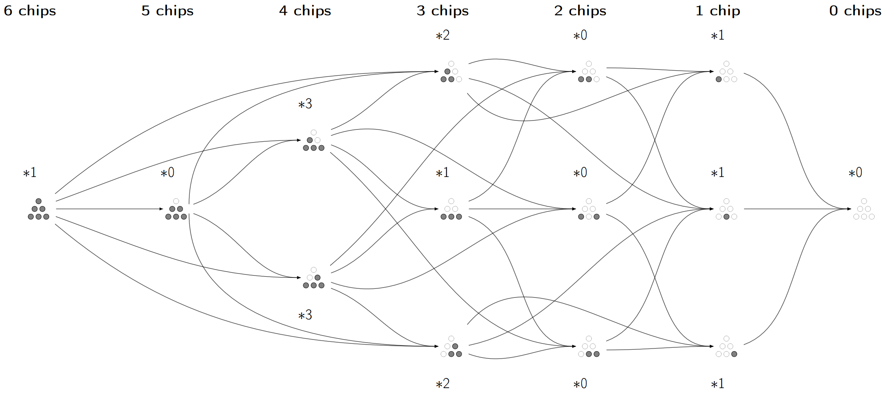

More serious works than "Projects."
While ruminating, I came up with a game inspired by nim, played on a triangular stack of chips. After introducing it to my friend, Evan Kniffen, he pressed for us to solve the game and find the number of states up to isomorphism. Having discovered independent results and conjectures, we found that the game was previously invented under the name "pyramid nim" in a research paper in 2022 cited by nobody. However, the game is still unsolved, and the conjectures unsatisfying. Since then, we have been finding new results, which we will publish in a paper.
We presented this research at the Texas A&M Student Research Week in the Computational and Data Science poster presentation category, winning first place for undergraduates. We also presented it at the TX-LA Undergraduate Research Conference at LSU. Since we have yet to write a paper over it, here are the slides we presented at the conference.
After the paper is published, we will make the game playable online.
